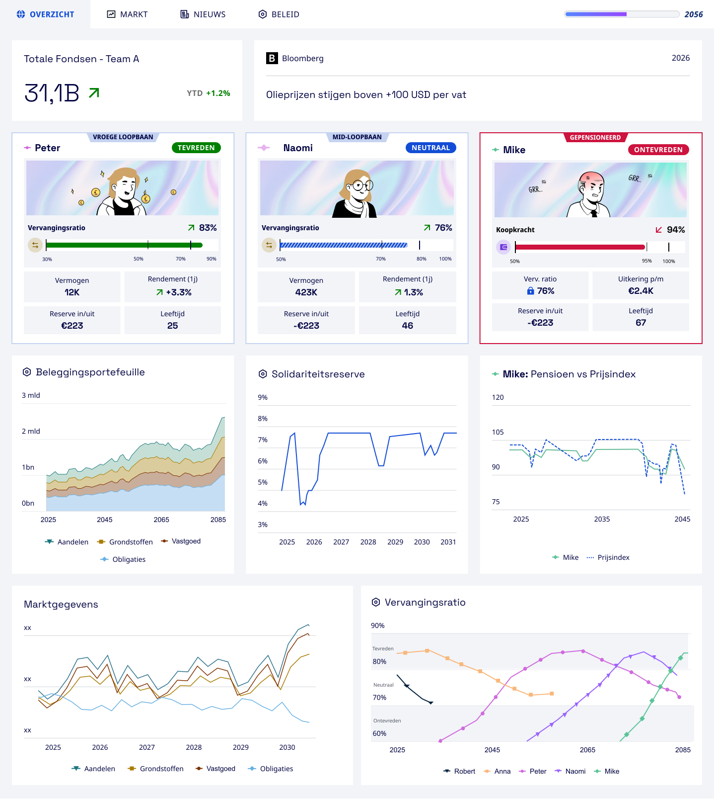
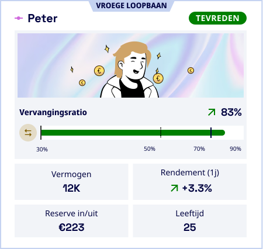
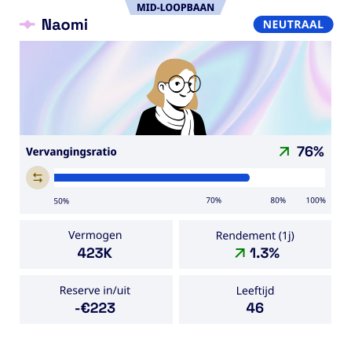
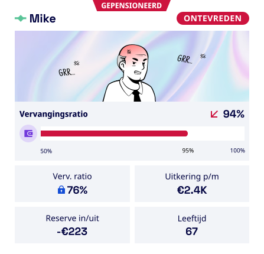

<template id="scene2-dashboard-template">
  <div id="scene2-dashboard" data-composition-id="scene2-dashboard" data-width="1920" data-height="1080">

    <link rel="preconnect" href="https://fonts.googleapis.com">
    <link rel="preconnect" href="https://fonts.gstatic.com" crossorigin>
    <link href="https://fonts.googleapis.com/css2?family=Noto+Sans:wght@700;900&display=swap" rel="stylesheet">

    <div id="db-stage" class="clip"
         data-start="0" data-duration="8.0" data-track-index="0"
         style="position:absolute; inset:0; width:1920px; height:1080px;
                display:flex; align-items:center; justify-content:center;">

      <!-- Gestileerd tablet-frame (iPad-achtig: 4:3-verhouding, bezel, camera, home-bar) -->
      <div id="tablet-frame">
        <div id="tablet-camera"></div>
        <div id="db-window">
          
        </div>
        <div id="tablet-home"></div>
      </div>

      <!-- Caption: schuift van rechts naar links, stopt aan de linkerzijde -->
      <div id="sc2-caption">Doorleef verschillende scenario's</div>

      <!-- Profielkaarten — dalen vanuit bovenkant in beeld, over het tablet -->
      <!-- border-radius 25px + padding 20px per kaart zoals brief -->
      <div id="cards-layer">
        <div class="card-wrap" id="card-1">
          
          <!-- witte cover over groene balk: SVG x=71,y=222,w=314,h=10 → +20px padding -->
          <div class="bar-cover" id="bar-cover-1"></div>
        </div>
        <div class="card-wrap" id="card-2">
          
          <!-- witte cover over blauwe balk: SVG x≈69,y=222,w=258,h=10 → +20px padding -->
          <div class="bar-cover" id="bar-cover-2"></div>
        </div>
        <div class="card-wrap" id="card-3">
          
          <!-- witte cover over rode balk: SVG x≈73,y=226,w=260,h=10 → +20px padding -->
          <div class="bar-cover" id="bar-cover-3"></div>
        </div>
      </div>
    </div>

    <style>
      #scene2-dashboard { background: #ceecff; overflow: hidden; }

      /* ── Tablet-frame (bezel) ── */
      #tablet-frame {
        position: relative;
        width: 1400px;
        height: 900px;
        background: #e0e0e0;
        border-radius: 20px;
        padding: 22px;
        box-sizing: border-box;
        box-shadow: 0 20px 60px rgba(0,0,0,0.20), 0 6px 20px rgba(0,0,0,0.12);
        z-index: 1;
        opacity: 0;
      }

      /* Camera-dot bovenin de bezel */
      #tablet-camera {
        position: absolute;
        top: 5px;
        left: 50%;
        margin-left: -4px;
        width: 8px;
        height: 8px;
        border-radius: 50%;
        background: #aaa;
        z-index: 2;
      }

      /* Home-bar onderin de bezel */
      #tablet-home {
        position: absolute;
        bottom: 5px;
        left: 50%;
        margin-left: -40px;
        width: 80px;
        height: 4px;
        border-radius: 2px;
        background: #aaa;
      }

      /* ── Schermgebied ── */
      #db-window {
        position: relative;
        width: 1356px; /* 1400 - 2×22 */
        height: 856px; /* 900 - 2×22 */
        border-radius: 8px;
        overflow: hidden;
      }

      #db-img {
        position: absolute;
        top: 0;
        left: 0;
        width: 1356px;
        height: auto;
      }

      /* ── Profielkaarten ── */
      /*
        3 kaarten à 450×426 + padding 20px = 490×466 elk
        3×490 + 2×24 (gutter) = 1518px breed
        left  = (1920 - 1518) / 2 = 201px
        top   = (1080 - 466)  / 2 = 307px
      */
      #cards-layer {
        position: absolute;
        top: 307px;
        left: 201px;
        width: 1518px;
        display: flex;
        gap: 24px;
        z-index: 3;
      }

      .card-wrap {
        background: #ffffff;
        border-radius: 25px;
        padding: 20px;
        box-shadow: 0 12px 40px rgba(0,0,0,0.15), 0 4px 12px rgba(0,0,0,0.10);
        flex-shrink: 0;
        opacity: 0;
      }

      .card-wrap img {
        display: block;
        width: 450px;
        height: 426px;
      }

      /* ── Caption ── */
      #sc2-caption {
        position: absolute;
        top: 895px; left: 0;
        background: #000f47;
        color: #ffffff;
        font-family: "Noto Sans", system-ui, sans-serif;
        font-weight: 700;
        font-size: 52px;
        letter-spacing: 0.01em;
        padding: 22px 48px;
        white-space: nowrap;
        opacity: 0;
        z-index: 5;
      }

      /* ── Progress bar covers ── */
      /* Witte vlakken exact over de gekleurde balk in de SVG.
         scaleX 1→0 met transformOrigin rechts onthult de balk van links naar rechts. */
      .card-wrap { position: relative; }
      .bar-cover {
        position: absolute;
        background: #ffffff;
        height: 10px;
        pointer-events: none;
        transform: scaleX(1);
        transform-origin: right center;
      }
      #bar-cover-1 { left: 87px; top: 236px; width: 313px; height: 13px; }
      #bar-cover-2 { left: 87px; top: 236px; width: 254px; height: 13px; }
      #bar-cover-3 { left: 87px; top: 236px; width: 254px; height: 13px; }
    </style>

    <script>
      window.__timelines = window.__timelines || {};
      gsap.set(".bar-cover", { scaleX: 1, transformOrigin: "right center" });
      const tl = gsap.timeline({ paused: true });

      // Caption schuift in vanaf rechts zodra de profielkaarten in beeld komen
      tl.fromTo("#sc2-caption",
        { opacity: 1, x: -1920 },
        { x: 0, duration: 0.8, ease: "power2.out" }, 4.30);

      // Tablet venster rustig inschuiven
      tl.fromTo("#tablet-frame",
        { opacity: 0, scale: 0.94, y: 28 },
        { opacity: 1, scale: 1, y: 0, duration: 0.8, ease: "power2.out" }, 0);

      // Dashboard scrollt langzaam naar beneden — laat de volledige pagina zien
      // SVG 1609px hoog, weergegeven op ~1247px; venster 756px → 491px scrollbaar
      tl.fromTo("#db-img",
        { y: 0 },
        { y: -659, duration: 3.2, ease: "power1.inOut" }, 0.8);

      // Tablet vervaagt als de kaarten in beeld komen (diepte-effect)
      // Scroll eindigt op ~4.0s; kaarten komen 0.3s later
      tl.to("#tablet-frame",
        { filter: "blur(6px)", duration: 0.5, ease: "power2.inOut" }, 4.05);

      // 3 profielkaarten dalen vanuit boven in beeld, staggered 0.15s
      tl.fromTo("#card-1",
        { opacity: 0, y: -500 },
        { opacity: 1, y: 0, duration: 0.55, ease: "power2.out" }, 4.30);
      tl.fromTo("#card-2",
        { opacity: 0, y: -500 },
        { opacity: 1, y: 0, duration: 0.55, ease: "power2.out" }, 4.45);
      tl.fromTo("#card-3",
        { opacity: 0, y: -500 },
        { opacity: 1, y: 0, duration: 0.55, ease: "power2.out" }, 4.60);

      // Progress bars: cover vegt weg van rechts → balk verschijnt van links naar rechts
      // Start 0.1s nadat elke kaart is geland (~4.85s, 5.0s, 5.15s)
      tl.fromTo("#bar-cover-1",
        { scaleX: 1, transformOrigin: "right center" },
        { scaleX: 0, duration: 0.7, ease: "power2.inOut" }, 4.95);
      tl.fromTo("#bar-cover-2",
        { scaleX: 1, transformOrigin: "right center" },
        { scaleX: 0, duration: 0.7, ease: "power2.inOut" }, 5.10);
      tl.fromTo("#bar-cover-3",
        { scaleX: 1, transformOrigin: "right center" },
        { scaleX: 0, duration: 0.7, ease: "power2.inOut" }, 5.25);

      // Laatste bar klaar op ~5.95s; 2s standtijd → scene 8.0s
      tl.set({}, {}, 8.0);

      window.__timelines["scene2-dashboard"] = tl;
    </script>
  </div>
</template>
